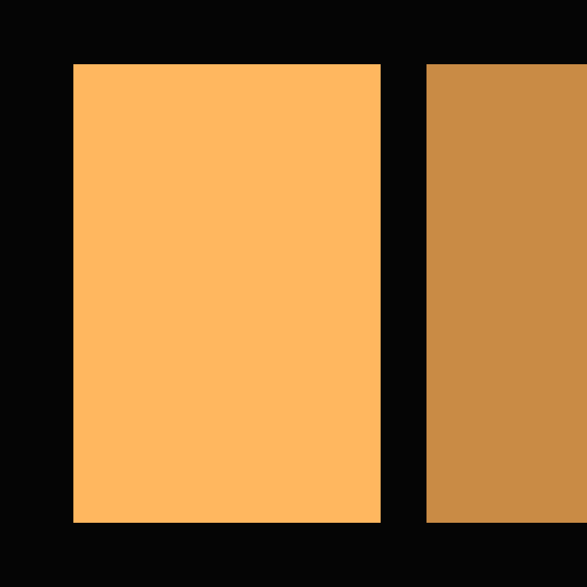

Étape 10, jamais faite. Un seul concept, tiré de la direction 2a et de l'accent ambre, sans texte, lisible à 16 px. Les couleurs sont celles de la planche 8 : bg.canvas en fond, accent pour l'affiche. La teinte sourde de la seconde affiche est le seul ton nouveau — signalé en fin de page, pas ajouté au système.
12a le concept · 12b toutes les tailles · 12c sur un dock Mac · 12d sur un écran d'accueil iOS · 12e la source et les fichiers à produire

<svg viewBox="0 0 1024 1024">
<rect width="1024" height="1024" fill="#050505"/>
<rect x="128" y="112" width="536" height="800"
fill="#ffb75f"/>
<rect x="744" y="112" width="280" height="800"
fill="#c98b45"/>
</svg>
Trois rectangles, aucune courbe, aucun effet. Le fichier est dans le dossier icon/ du projet et dans le paquet de transmission.